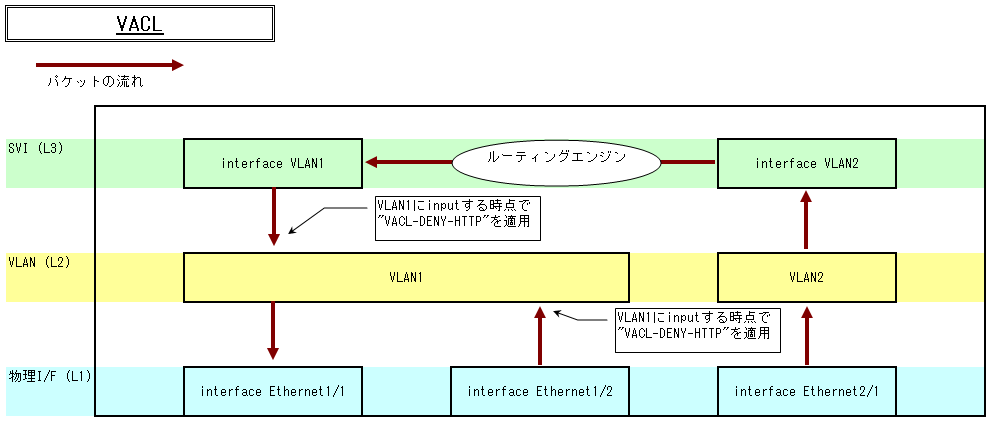

ACL Access Control List¶
ACLとは¶
Access Control Listの略。
主にパケットフィルタリングに使用されます。そのほかにも経路の制御やNATのアドレスプールの定義、DHCPのプールアドレスの定義など幅広い方法で活用されます。
パケットフィルタリングの際、フィルターを適用する箇所により、RACL、VACL、PACLと名前が変わります。
| 種類 | RACL(Router ACL) | VACL(VLAN ACL) | PACL(Port ACL) |
|---|---|---|---|
| 設定先 | L3I/F | VLAN | スイッチポート(ポートチャネルを除く) |
| 適用時 | ルーティング | スイッチング | ルーティングおよびスイッチング |
| 方向 | InputまたはOutput | Inputのみ | Inputのみ |
- Cisco Catalystスイッチ教科書P132より引用
RACL¶
ルーティング時にフィルタリングを適用します。適用場所はL3インタフェースとなります。
適用イメージ¶

コンフィグ¶
interface Ethernet1/1
switchport access vlan1
!
interface Ethernet2/1
switchport access vlan2
!
interface VLAN1
ip access-group 101 out ← ACL101をoutput方向に適用
!
interface VLAN2
ip access-group 102 in ← ACL102をinput方向に適用
!
access-list 101 permit tcp any any eq www ← ポート番号が80のパケットのみ許可
access-list 102 deny ip host 192.168.1.20 any ← 192.168.1.20からのパケットを拒否し…
access-list 102 permit ip any any ← それ以外のパケットは許可する
VACL¶
スイッチング時にフィルタリングを適用します。適用場所はVLANとなります。
適用イメージ¶
コンフィグ¶
interface Ethernet1/1
switchport access vlan1
!
interface Ethernet1/2
switchport access vlan1
!
interface Ethernet2/1
switchport access vlan2
!
ip access-list extended match_http
permit tcp any any eq www ← port番号が80のパケットのみチェック
!
ip access-list extended match_all
permit ip any any ← 全てのパケットをチェック
!
vlan access-map VACL-DENY-HTTP 10 ← アクセスマップ"VACL-DENY-HTTP"を定義
match ip address match_http ← match_httpに一致するIPアドレスを…
action drop ← 拒否する
vlan access-map VACL-DENY-HTTP 20
match ip address match_all ← mathch_allに一致するIPアドレスを…
action forward ← 許可する
!
vlan filter VACL-DENY-HTTP vlan-list 1 ← VLAN1に"VACL-DENY-HTTP"を適用
PACL¶
ルーティングおよびスイッチング時にフィルタリングを適用します。適用場所はポートチャネルを除くスイッチポートとなります。